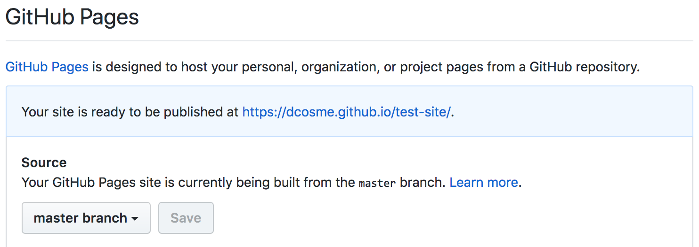

hugo-academic themeMost of the information in this tutorial is taken from a few amazing resources on using the blogdown package to create static websites in RStudio using R Markdown:
blogdown is a package that leverages R Markdown and Hugo to create static websites.
Hugo is a static website generator. Static websites are collections of HTML files and the external dependencies referenced within them. More on Hugo here.
install.packages("blogdown")
library(blogdown)
blogdown::install_hugo()blogdown::hugo_version()
blogdown::update_hugo()There are a number of ways to create a new website project. You can create it using the IDE by clicking File > New Project > New Directory > Website Using Blogdown or by simply specifying the path to the new website as a argument in the blogdown::new_site() function. Make sure that you specify the new directory (e.g. the name of the folder you would like to create) in the path.
Here we’ll create the website one level above our current working directory. The reason for doing this is that our current working directory is a git repository and if we try to publish this later, it will cause problems (it’s not straight forward to have a repo inside of a repo).
blogdown::new_site("../default-site")You can also specify a theme when creating your new site. The default is the lithium theme, but there are a variety of other Hugo themes available. We’ll use the hugo-academic theme later in the tutorial.
blogdown::new_site(theme = 'yihui/hugo-lithium')
blogdown::new_site(theme = 'devcows/hugo-universal-theme')
blogdown::new_site(theme = 'gcushen/hugo-academic')Anytime you want to render the site, you can do so by either clicking Addins > Serve Site or executing the blogdown::serve_site() function. This function should be executed from the site directory, so if you are not currently in that directory, make sure to change you current working directory to the site directory.
setwd("../default-site/")
blogdown::serve_site()Take a look at what’s in the site directory.
Key components:
+ config.toml = configuration file that the user edits to customize their site
+ /content/ = where the actual content (e.g. pages, posts live)
+ /public/ = the directory containing the website for online deployment
+ /layouts/ = where you’ll place code to override the original template design
+ /static/ = where content such as images and CSS code are stored
+ /theme/ = where the theme template is stored
config.toml fileThe configuration file is where global variables and settings are defined. More about configuration files and the variables specified within it here. More information on TOML syntax here.
config.tomlChange the site name
title = "Dani Cosme, M.S."Enable emojis
enableEmoji = trueCreate a file called index.html in the layouts/ directory.
touch ../default-site/layouts/index.htmlCopy the following text into layouts/index.html. I borrowed this code from Alison Hill’s awesome blogdown tutorial, but you could write your own html code to create the layout for your homepage.
{{ partial "header" . }}
<div class="intro">
<div><center><img class="center-image" src={{ .Site.Params.img }} width="20%"/></center></div>
<h1><center>{{ markdownify .Title }}</center></h1>
<h2><center>{{ markdownify .Site.Params.Description }}</center></h2>
</div>
{{ partial "footer" . }}We referenced a field.Site.Params.img, but it currently doesn’t exist. Let’s add it to config.toml and also update the site description.
[params]
description = "Welcome to my website!<br>Here is a bunch of text about me.<br>Yada yada yada."
img = "https://avatars1.githubusercontent.com/u/11858670?s=460&v=4"Since the posts are no longer on linked from the landing page, let’s add the Posts page to the navigation bar by adding it as a field in config.toml:
[[menu.main]]
name = "Posts"
url = "/post/"Open /content/about.md and check it out. Add the following text to the about.md file and look at the difference.
Because we enabled emojis in `config.toml`, we can use them here. I :heart: emojis!
Posts are written in plain markdown. Here is some useful syntax. More on plain markdown in the default post [A Plain Markdown Post](../2016/12/30/a-plain-markdown-post/). There's also lots more information in the digital book [*blogdown: Creating Websites with R Markdown*](https://bookdown.org/yihui/blogdown/output-format.html).
## h2 header
### h3 header
#### h4 header
**bold**<br>
*italics*<br>
~~strikethrough~~
Also check out [Cory's awesome markdown tutorial](https://github.com/uodatascience/markdown) for more markdown magic.
Note: you can write in html.
<h4> Embed a gif <br>
<img src="https://media.giphy.com/media/l0Nwvo3slpo6nS0PC/giphy.gif" alt="neato">
<h4> Embed a calendar <br>
<iframe src="https://calendar.google.com/calendar/embed?src=beo4lsbjns0kqovh8nktjou8l4%40group.calendar.google.com&ctz=America%2FLos_Angeles" style="border: 0" width="800" height="600" frameborder="0" scrolling="no"></iframe>Create a new page called CV in the content folder.
setwd("../default-site/")
blogdown::new_content("content/cv")Copy the following text into the document:
---
title: ''
date: '2018-06-03 23:25:08 GMT'
---
<div style="text-align: right"><h1>DANI COSME</div>
<div style="text-align: right">dcosme@uoregon.edu</div>
<div style="text-align: right"><a href="http://dcosme.github.io">dcosme.github.io</a></div>
### EDUCATION //
**Doctoral Candidate, Psychology, 2015-present**<br>
University of Oregon (Eugene, OR)<br>
Advisors: Drs. Jennifer Pfeifer & Elliot Berkman
### PUBLICATIONS //
**Cosme, D.** (2018) Brilliant article. *Science*, 1(1), 1-5.<br>
[DOI](http://doi.org/) [OSF](http://osf.io/) [NEUROVAULT](http://neurovault.org/)Add the page to the navigation bar by adding the following text to config.toml. Note that while the filepath is site root/content/cv.md, the webpath is /baseurl/cv.
[[menu.main]]
name = "CV"
url = "/cv/"This is the start of a super basic markdown CV, but there are a number of more advanced templates out there, such as this one.
Open content/post and look around.
Using the IDE: Addins > New Post
In the console, the new_post() function will automatically create a new post and append the date to the front of the file name that you specify as an input.
Let’s create a plain markdown post and add some content.
setwd("../default-site/")
blogdown::new_post("newmd", ext = '.md')Add the following text to the new .md file:
Here is some text. Lots of text. So much text.
**Gee this is fun!**
Let's add a table, just for kicks.
| hours of sun | happiness |
|---|---|
| 0 | 1 |
| 3 | 4 |
| 5 | 7 |
| 7 | 10 |Add the following r code chunks (removing eval=FALSE) and view the file in the browser:
mean(iris$Sepal.Length)require(ggplot2)
ggplot(iris, aes(Sepal.Length, Sepal.Width, color = Species)) +
geom_point() +
geom_smooth(method = "lm") +
scale_color_manual(values = c("#3B9AB2", "#E4B80E", "#F21A00"))Now let’s create a plain markdown post and see how it differs from the plain markdown file.
setwd("../default-site/")
blogdown::new_post("newrmd", ext = '.Rmd')Add the same text as above to your .Rmd file and view it in the browser. We can see that the text looks similar in both files, but only in the R Markdown file are we able to execute code chunks.
This feature makes R Mardown posts ideal for sharing code via your website.
Rather than creating a markdown post, you may simply want to an HTML file that you’ve already created (e.g. your data science tutorial). To do this, you would simply copy the file into /content/ or an alternative location.
To compare the output of adding an HTML file versus adding an Rmd file, we’ll create a folder called “data-visualization” and copy two test files into it.
# make the directory
mkdir ../default-site/content/data-visualization
# copy the HTML and .Rmd files to the directory
cp datavis.html ../default-site/content/data-visualization
cp datavis_rmd.Rmd ../default-site/content/data-visualizationServe the site
setwd("../default-site/")
blogdown::serve_site()Compare the files by opening the site in the browser and navigating to:
/data-visualization/datavis
/data-visualization/datavis_rmdHere’s a script to enable password protection on a portion of your website.
<SCRIPT>
function passWord() {
var testV = 1;
var pass1 = prompt('Please Enter Your Password',' ');
while (testV < 3) {
if (!pass1)
history.go(-1);
if (pass1.toLowerCase() == "my super secret password") {
window.open('EasterEgg.html');
break;
}
testV+=1;
var pass1 =
prompt('Access Denied - Password Incorrect, Please Try Again.','Password');
}
if (pass1.toLowerCase()!="password" & testV ==3)
history.go(-1);
return " ";
}
</SCRIPT>
<CENTER>
<FORM>
<input type="button" value="Enter Protected Area" onClick="passWord()">
</FORM>
</CENTER>hugo-academic templateNow that we’ve gotten our bearings with the default template, let’s check out a popular template for making personal academic website created by George Cushen.
Here are a few examples of how people have modified this template:
+ Alison Hill
+ Flip Tandeo
+ Amlan Kar
+ Yu Cheng
We’ll call our new website academic-site and it will be saved to the rstudio-websites directory.
blogdown::new_site("../academic-site", theme = "gcushen/hugo-academic")Render the site, if necessary.
setwd("../academic-site/")
blogdown::serve_site()Click around the rendered website. What features seem useful? What features would you want in a personal website?
Now, let’s check out the file structure and take a look at what’s in the following files/directories: + config.toml + content
To create your website for publishing, execute blogdown::hugo_build(). This will create/update the public/ directory in your site’s root directory.
Before we build and deploy our site, we need to do a couple of things:
Create a repo for your website on GitHub. Make sure that you do not initialize it with a README (you could, but then the following directions will not work properly).
If you’re site will be hosted in a subdirectory (e.g. username.github.io/repo-name), you’ll need to set relativeurls = true in config.toml. More info on this here.
relativeurls = trueBuild the site. Executing this command will update the /public/ folder with all of your new content.
setwd("../default-site/")
blogdown::hugo_build()There are several ways to publish your website. Today, we’re going to go over how to deploy your sit using git from the command line. There are other options though, e.g. the authors of blogdown: Creating Websites with R Markdown recommend using Netlify to serve your site. Lots more on publishing your site in the book.
In the command line, navigate to the public folder in your site
cd ~/Documents/Courses/PSY607_DataScience/default-site/publicInialize git
It’s important that the public folder is not currenly living in a git repository. To check whether git is initialized type git status.
git initAdd remote repository
git remote add origin https://github.com/dcosme/test-site.gitAdd and commit all the files
git add .
git commit -m "initial commit"Push local changes to remote repository
git push origin masterIn Github, enable GitHub Pages Your repo > Settings > GitHub Page > Source = master branch > Save
If this has worked, there should now be a link highlighted in blue with the address to your website. 
Go to your website and bask in the glory
Here is the suggested workflow from the main developer of blogdown, Yihui Xie:
- Open your website project, click the “Serve Site” addin
- Revise old pages/posts, or click the “New Post” addin
- Write and save (take a look at the automatic preview)
- Push everything to Github, or upload the public/ directory to Netlify directly
More on the recommended workflow here.
You final hack in this class if to create a personal website and post it to GitHub. You can use any template you want or make it from scratch using the rmarkdown package (tutorial here).
Here are the components you should include:
A “Resources” tab with at least one of your ‘contributions to science’ from this class.
Note: You decide how fancyyou want to be for #3. You may simply uploading your .html tutorial presentation. You can include the documentation and github link for the package you created last week. You can host a useful (or less useful) shiny app. You are limited only by your creativity (and your time).
Change colors, futz with custom CSS, make a shiny app and link to it – feel free to add anything else you’d like!
Go
Or just do the bare minimum because it’s the last week of the term